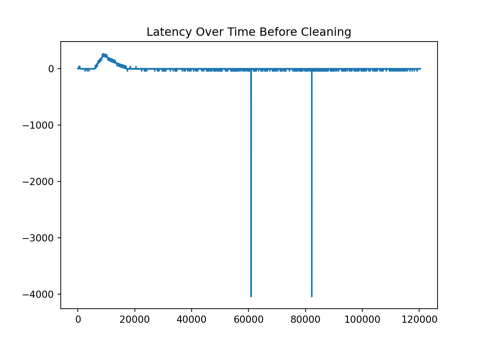
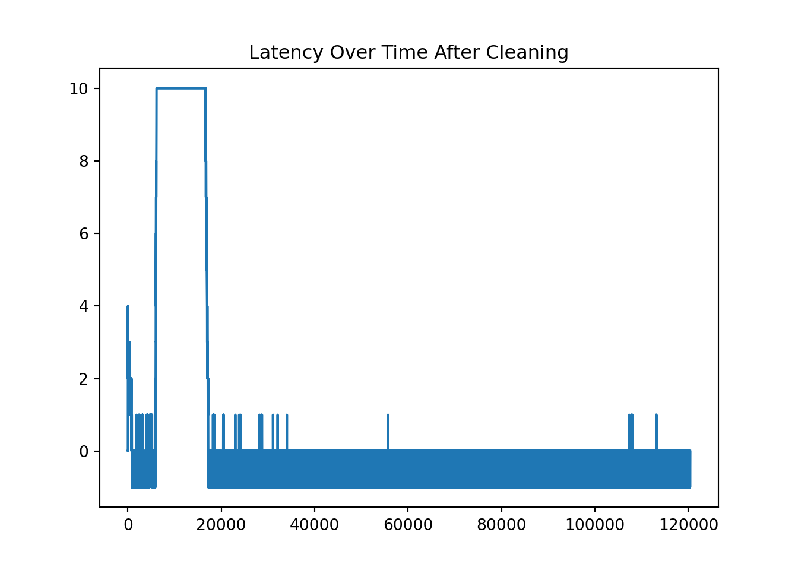

Note: 이 페이지는 키움 API를 통해 Real Time Tick Data를 받아온 후 데이터를 클리닝 하는 과정을 보여주고 있습니다. 오류 및 문의사항은 metrics@kakao.com 으로 메일주시면 감사하겠습니다
데이터 자체에 대한 질문과 데이터 제공에 관한 문의는 000 으로 메일 주시면 감사하겠습니다
R code 블럭과 Python code 블럭은 다음과 같이 색깔로 구분하겠습니다. 결과창은 동일하게 Ivory 색 블럭으로 표시됩니다.
# "이것은 R 코드 입니다."# "이것은 Python 코드 입니다."library(dplyr)
library(tidyverse)
library(DT)
library(reticulate) # Python
#py_install(packages = "matplotlib")
#py_install(packages = "pandas")
#py_install(packages = 'dfply')
options(scipen=999)
options(max.print = 99999999)
options(digits=10)wd = "G:/공유 드라이브/Project_TBD/Stock_Data/real_time/kiwoom_stocks/2021-01-14"
wd2 = "/Volumes/GoogleDrive/공유 드라이브/Project_TBD/Stock_Data/real_time/kiwoom_stocks/2021-01-14"
fn = list.files(path = wd2,
pattern = '.*stocks_trade.*\\.csv') # 마지막 30분 틱데이터 가지고오기
path = paste(wd2,fn,sep = '/')
# data = readr::read_csv(file = path,
# col_names = c('code','trade_date','timestamp','price','open','high','low',
# 'size','cum_size','ask1','bid1'))
tbl =
list.files(path = wd2, pattern = '.*stocks_trade.*\\.csv') %>%
map_df(~readr::read_csv(paste(wd2,.,sep = '/'),
col_names = c('code','trade_date','timestamp','price','open','high','low',
'size','cum_size','ask1','bid1') ))
sum(is.na(tbl))## [1] 0import numpy as np
import matplotlib.pyplot as plt
import pandas as pd
from datetime import datetime, timedelta
#py_install(packages = "matplotlib")
#py_install(packages = "pandas")
pd.options.display.float_format = '{:.4f}'.format
pd.set_option('display.max_rows', 100)
df_py = r.tbl
df_py.head()## code trade_date timestamp ... cum_size ask1 bid1
## 0 000990 100105.0000 20210114100105.3164 ... 679839.0000 60000.0000 59800.0000
## 1 000990 100105.0000 20210114100105.3164 ... 679798.0000 59900.0000 59800.0000
## 2 000300 100105.0000 20210114100105.3203 ... 97702.0000 791.0000 790.0000
## 3 000080 100105.0000 20210114100105.3711 ... 164732.0000 35950.0000 35900.0000
## 4 001630 100105.0000 20210114100105.5117 ... 108391.0000 127500.0000 127000.0000
##
## [5 rows x 11 columns]ss = df_py[df_py.code == '005930'].reset_index(drop=True)
ss.shape## (120366, 11)Delete rows where “second” does not lie between 0 and 59.
Substring the timstamp to get each time component.
# Task 1
ss = ss[ss['timestamp'].apply(lambda x: int(str(int(x*1000000))[12:14])) < 60 ]
# Task4
ss = ss.assign( microsecond = ss['timestamp'].apply(lambda x: str(int(x*1000000))[14:20]),
second = ss['timestamp'].apply(lambda x: str(int(x*1000000))[12:14]),
minute = ss['timestamp'].apply(lambda x: str(int(x*1000000))[10:12]),
hour = ss['timestamp'].apply(lambda x: str(int(x*1000000))[8:10]),
day = ss['timestamp'].apply(lambda x: str(int(x*1000000))[6:8]),
month = ss['timestamp'].apply(lambda x: str(int(x*1000000))[4:6]),
year = ss['timestamp'].apply(lambda x: str(int(x*1000000))[0:4]))
ss.head()## code trade_date timestamp price ... hour day month year
## 0 005930 100105.0000 20210114100105.7930 89500.0000 ... 10 14 01 2021
## 1 005930 100105.0000 20210114100105.8438 89600.0000 ... 10 14 01 2021
## 2 005930 100106.0000 20210114100106.0195 89600.0000 ... 10 14 01 2021
## 3 005930 100106.0000 20210114100106.0195 89500.0000 ... 10 14 01 2021
## 4 005930 100106.0000 20210114100106.1836 89600.0000 ... 10 14 01 2021
##
## [5 rows x 18 columns]ss['time'] = ss.apply(lambda x: datetime(
year = int(x['year']),
month = int(x['month']),
day = int(x['day']),
hour = int(x['hour']),
minute = int(x['minute']),
second = int(x['second']),
microsecond = int(x['microsecond'])).strftime("%H:%M:%S.%f")[:-3], axis=1)
ss['latency'] = ss['timestamp'].apply(lambda x: int(str(int(x*1000000))[8:14])) - ss['trade_date']
ss1 = ss[['time', 'hour', 'minute', 'second', 'price','size','ask1','bid1','latency']]
ss1.head(10)## time hour minute second ... size ask1 bid1 latency
## 0 10:01:05.793 10 01 05 ... 7.0000 89600.0000 89500.0000 0.0000
## 1 10:01:05.842 10 01 05 ... 6.0000 89600.0000 89500.0000 0.0000
## 2 10:01:06.018 10 01 06 ... 10.0000 89600.0000 89500.0000 0.0000
## 3 10:01:06.018 10 01 06 ... 44.0000 89600.0000 89500.0000 0.0000
## 4 10:01:06.182 10 01 06 ... 10.0000 89600.0000 89500.0000 0.0000
## 5 10:01:06.338 10 01 06 ... 1.0000 89600.0000 89500.0000 0.0000
## 6 10:01:06.366 10 01 06 ... 1.0000 89600.0000 89500.0000 0.0000
## 7 10:01:06.678 10 01 06 ... 1.0000 89600.0000 89500.0000 0.0000
## 8 10:01:06.805 10 01 06 ... 1.0000 89600.0000 89500.0000 0.0000
## 9 10:01:07.264 10 01 07 ... 69.0000 89600.0000 89500.0000 1.0000
##
## [10 rows x 9 columns]*Calculate the latency by substracting the tiem provided by Kiwoom dataset and self-recorded time at the moment of processing the data delivered through the Kiwoom API.
# Task 2 & 3
print(ss1.latency.value_counts())## 0.0000 84817
## -1.0000 22633
## 1.0000 635
## 2.0000 555
## -41.0000 376
## ...
## 71.0000 2
## 162.0000 2
## 52.0000 2
## 143.0000 2
## 224.0000 1
## Name: latency, Length: 224, dtype: int64print(ss1.latency.nsmallest(10))## 60896 -4041.0000
## 60897 -4041.0000
## 82227 -4041.0000
## 2518 -41.0000
## 3233 -41.0000
## 3868 -41.0000
## 17413 -41.0000
## 22419 -41.0000
## 23377 -41.0000
## 23709 -41.0000
## Name: latency, dtype: float64print(ss1.latency.nlargest(10))## 8908 265.0000
## 8911 265.0000
## 8912 265.0000
## 8913 265.0000
## 8917 265.0000
## 8918 265.0000
## 8924 265.0000
## 8925 265.0000
## 8926 265.0000
## 8927 265.0000
## Name: latency, dtype: float64plt.plot(ss1.latency)
plt.title('Latency Over Time Before Cleaning')
pd.set_option('display.max_rows', 200)
ss1[ss1.latency == -41].groupby(['hour','minute','second'])['latency'].agg(['count'])## count
## hour minute second
## 10 07 59 1
## 09 59 1
## 11 59 1
## 45 59 1
## 57 59 1
## 11 00 59 1
## 01 59 3
## 02 59 1
## 09 59 4
## 11 59 1
## 12 59 3
## 14 59 1
## 15 59 1
## 16 59 1
## 17 59 2
## 21 59 1
## 23 59 2
## 25 59 1
## 26 59 1
## 27 59 1
## 33 59 1
## 35 59 1
## 36 59 2
## 39 59 1
## 41 59 1
## 43 59 1
## 46 59 2
## 48 59 1
## 49 59 1
## 50 59 1
## 56 59 2
## 58 59 1
## 12 02 59 1
## 03 59 2
## 05 59 1
## 07 59 1
## 09 59 1
## 10 59 1
## 12 59 2
## 13 59 2
## 14 59 1
## 16 59 1
## 17 59 1
## 19 59 1
## 20 59 1
## 21 59 2
## 22 59 2
## 27 59 2
## 28 59 1
## 29 59 1
## 30 59 2
## 34 59 2
## 35 59 2
## 36 59 1
## 37 59 1
## 38 59 1
## 39 59 1
## 40 59 1
## 41 59 2
## 42 59 1
## 43 59 2
## 45 59 4
## 47 59 1
## 49 59 1
## 50 59 1
## 51 59 1
## 53 59 1
## 55 59 2
## 56 59 1
## 57 59 1
## 58 59 2
## 13 02 59 2
## 03 59 1
## 04 59 1
## 05 59 1
## 07 59 1
## 10 59 1
## 11 59 3
## 12 59 1
## 14 59 1
## 15 59 2
## 16 59 2
## 17 59 1
## 19 59 1
## 21 59 2
## 22 59 2
## 23 59 2
## 24 59 3
## 25 59 3
## 27 59 3
## 28 59 2
## 29 59 1
## 31 59 1
## 32 59 1
## 33 59 1
## 37 59 2
## 40 59 1
## 41 59 3
## 42 59 1
## 43 59 2
## 44 59 2
## 46 59 2
## 47 59 2
## 48 59 1
## 49 59 1
## 50 59 2
## 52 59 2
## 53 59 1
## 54 59 2
## 55 59 3
## 57 59 2
## 58 59 4
## 14 00 59 1
## 01 59 4
## 02 59 2
## 03 59 3
## 04 59 1
## 05 59 1
## 06 59 2
## 07 59 5
## 08 59 2
## 09 59 3
## 10 59 3
## 11 59 4
## 12 59 1
## 13 59 2
## 14 59 1
## 15 59 1
## 16 59 3
## 18 59 2
## 19 59 1
## 20 59 1
## 21 59 2
## 22 59 2
## 23 59 3
## 24 59 2
## 26 59 1
## 27 59 1
## 28 59 2
## 29 59 7
## 30 59 4
## 32 59 2
## 33 59 6
## 34 59 4
## 36 59 1
## 37 59 1
## 38 59 4
## 39 59 2
## 40 59 1
## 42 59 1
## 43 59 2
## 44 59 5
## 45 59 4
## 46 59 4
## 48 59 3
## 49 59 2
## 51 59 5
## 52 59 4
## 53 59 6
## 54 59 4
## 56 59 2
## 57 59 5
## 58 59 3
## 15 00 59 6
## 02 59 6
## 03 59 3
## 04 59 3
## 05 59 2
## 06 59 5
## 07 59 2
## 08 59 7
## 09 59 2
## 10 59 2
## 11 59 2
## 12 59 4
## 13 59 2
## 14 59 5
## 15 59 6
## 16 59 5
## 17 59 2
## 18 59 3ss1[ss1.latency == -4041].groupby(['hour','minute','second'])['latency'].agg(['count'])## count
## hour minute second
## 12 59 59 2
## 13 59 59 1ss1[ss1.latency == 265].groupby(['hour','minute','second'])['latency'].agg(['count'])## count
## hour minute second
## 10 27 08 1
## 09 3
## 10 2
## 11 8
## 12 5
## 13 3
## 14 2
## 15 6
## 16 4
## 17 4ss2 = ss1[abs(ss1.latency) <=10]
print(ss2.latency.value_counts())## 0.0000 84817
## -1.0000 22633
## 1.0000 635
## 2.0000 555
## 3.0000 283
## 6.0000 99
## 10.0000 98
## 7.0000 94
## 4.0000 65
## 5.0000 61
## 8.0000 60
## 9.0000 55
## Name: latency, dtype: int64plt.plot(ss2.latency)
plt.title('Latency Over Time After Cleaning')
If price is large than midprice, then it is buyer-initiated. If price is less than midprice, then it is seller-initated. It is tricky if price is same as midprice. In that case, we use the following rule.
The tick rule is the most commonly used level-1 algorithm. This rule is rather simple and classifies a trade as buyer-initiated if the trade price is above the preceding trade price (an uptick trade) and as seller-initiated if the trade price is below the preceding trade price (a downtick trade). If the trade price is the same as the previous trade price (a zero-tick trade), the rule looks for the closest prior price that differs from the current trade price. Zero-uptick trades are classified as buys, and zero-downtick trades are classified as sells.
The rule above can be simply implemented through the code below.
ss = ss.assign(spread = ss['ask1'] - ss['bid1'],
mid = (ss['bid1'] + ss['ask1'])*.5,
ind = 0,
price1 = ss['price'].shift(1, fill_value=0),
price2 = ss['price'].shift(2, fill_value=0)
)
buy = ((ss['price'] > ss['mid']) |
((ss['price'] == ss['mid']) & (ss['price'] > ss['price1'])) |
((ss['price'] == ss['mid']) & (ss['price'] == ss['price1']) & (ss['price'] > ss['price2'])))
ss.loc[buy, 'ind'] = 1
ss.loc[~buy, 'ind'] = -1
ss1 = ss[['time', 'price','size','ask1','bid1','ind','spread']]
ss1.head(5)## time price size ask1 bid1 ind spread
## 0 10:01:05.793 89500.0000 7.0000 89600.0000 89500.0000 -1 100.0000
## 1 10:01:05.842 89600.0000 6.0000 89600.0000 89500.0000 1 100.0000
## 2 10:01:06.018 89600.0000 10.0000 89600.0000 89500.0000 1 100.0000
## 3 10:01:06.018 89500.0000 44.0000 89600.0000 89500.0000 -1 100.0000
## 4 10:01:06.182 89600.0000 10.0000 89600.0000 89500.0000 1 100.0000